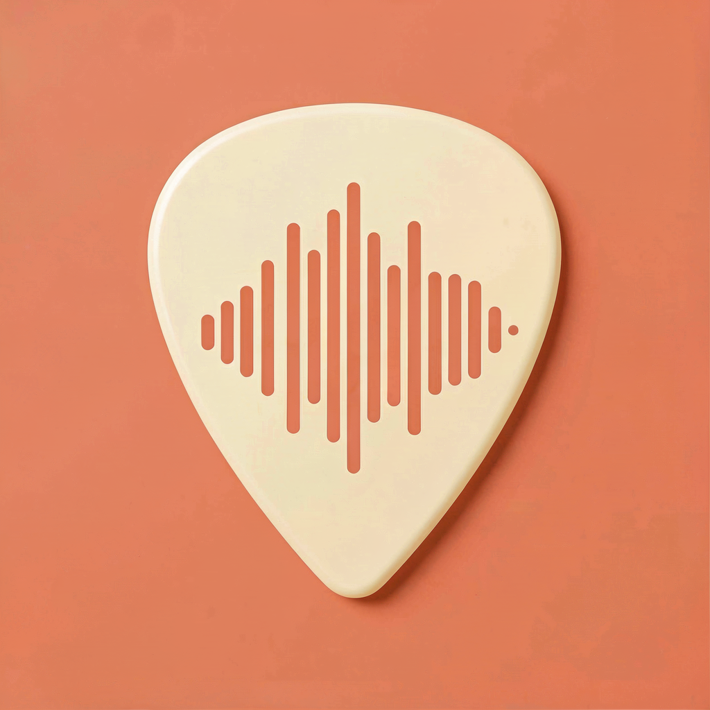

Play. Be heard.
StrumBuddy uses your microphone to listen as you play, helping you tune up and hear how cleanly your chords ring.

StrumBuddyYour acoustic guitar companion
Five minutes, your guitar, and a coach that actually listens. Build confidence one chord at a time.
Download on theApp StoreMade for iOS. Built around your acoustic guitar.
Good habits start with one strum.
StrumBuddy uses your microphone to listen as you play, helping you tune up and hear how cleanly your chords ring.
Follow a structured path, work with your practice coach, or explore in Free Play. Make room for a little progress every day.
Practice offline. Your guitar audio is processed on your device, so your sessions stay yours.
Pick up your guitar. Start with five minutes.